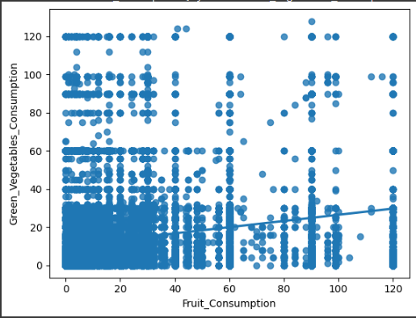

The Future of Biomedical Diagnostics
Abstract:
The escalating global population, particularly the increasing elderly demographic, presents a challenge in healthcare efficiency, exacerbated by overburdened hospitals struggling to address the surge in patient numbers. This study addresses the pressing issue of hospital overcrowding by proposing a machine learning model designed to expedite and enhance the diagnosis of heart disease, a leading cause of mortality among older individuals. The motivation stems from firsthand experiences and observations, highlighting the disproportionate impact of heart disease on urgent care facilities.
Heart disease claims nearly 700,000 lives annually in the United States, with elderly individuals constituting a significant portion of hospital admissions. The study aims to evaluate the potential impact of a machine learning model on hospital efficiency by investigating the feasibility of creating an accurate diagnostic tool.
Leveraging a dataset sourced from the Behavioral Risk Factor Surveillance System (BRFSS), encompassing 300,000+ individuals, the research unfolds in distinct phases. Initial data analysis explores patterns related to heart disease, revealing surprising insights such as the inverse relationship between alcohol consumption and heart disease prevalence. Subsequently, the machine learning phase involves experimenting with various classifiers, including Nearest Neighbors, Decision Tree, Random Forest, and XGBoost, ultimately achieving a model with a 93% accuracy rate.
In conclusion, the research demonstrates the potential of machine learning models to revolutionize diagnostic processes in healthcare, particularly for prevalent diseases like heart disease. The study underscores the need for ongoing advancements, emphasizing the role of technology in alleviating the burden on healthcare professionals and improving patient outcomes.
Research Motivation:
First, everybody knows that the human population increases exponentially as generations pass. With the passing years, more people become older citizens. These older citizens are also most susceptible to illness and injury. Next, overpopulation is an issue in hospitals as people who actively need to see a doctor cannot when their doctor is busy. These two ideas connect because the patients the doctors are constantly busy with are usually older citizens. I experienced this firsthand when I went to urgent care for an asthma attack, and all the rooms were full. I looked into what demographic of people occupy the most space in urgent care hospitals. I discovered that the highest percentage of patients occupying the most time in urgent care hospitals are older citizens. I then did more research on why an older person would go to the hospital, and I learned that the number one human killer is heart disease, which targets the older folk. Thus, I landed on the idea that I could create a machine learning model that could diagnose heart disease earlier than doctors can at a higher accuracy. This would save doctors tons of time, allowing them to focus on the people in immediate danger, and it provides a higher chance of survival for older citizens because catching heart disease early is always much easier to take care of than catching it late.
Background:
Heart Disease kills just under 700,000 people every year in the US.[3] For context, that is one in every five deaths in the US. According to the National Library of Medicine, ¼ of all discharges are elderly folk.[2] They also take up most priority cases as most yellow and red flags get used on them. The doctor's explanation for this statistic is that "they showed a greater diagnostic complexity." If my machine learning model could efficiently diagnose heart disease, doctors would not only catch it in their patients earlier, but they could also spend their time dealing with other things rather than trying to diagnose an older person.
Research Objectives:
- How much would a model like this actually affect hospital efficiency?
- Is it even possible to create a model that operates at a high enough accuracy?
Hypothesis:
Machine Learning models are known to be extremely smart, as they can pick up on patterns so obscure that doctors could never see them. Not only are computers smarter than doctors, but they are also faster. One computer can diagnose thousands of patients with heart disease at a time. Something 1000x better than what a regular human doctor could do. Using this fact, I am confident I can make a very accurate model to classify heart disease.
Experimental Materials:
The only materials I will be using are my computer, and a dataset I found public to everyone on a website called Kaggle.[1] This will be sourced in references, but for easy access I will leave a link here as well: https://www.kaggle.com/datasets/alphiree/cardiovascular-diseases-risk-prediction-dataset/data
Experimental Procedure:
- Go through Data Analysis steps
- Look at the data
- Look for patterns using graphs and heat maps (I will add pictures down in the data analysis section)
- Get all number values in the dataset
- Re-name any values to make machine learning possible on them
- Go through Machine Learning steps
- Split the data, train the data
- Use Classifiers on the data to get a feel on which ones work best.
- Use more advanced API’s and Packages to see bigger differences in the accuracy.
- Add in Hyper Parameters
- Add in Active Learning
- Finish! Gather Results!
Data Analysis:
What dataset are we working with?
- 300,000+ people (Majority don’t have heart disease)
- This comes from The Behavioral Risk Factor Surveillance System (BRFSS). Which is the nation’s premier system of health-related telephone surveys that collect state data about U.S. residents regarding their health-related risk behaviors, chronic health conditions, and use of preventive services.
Large data · may be biased because most information is from people without heart disease
What patterns do we see?
- This is a box of some variables the computer is using to help diagnose heart disease.
- We can sometimes spot patterns by seeing boxes close to 0 or 1. This means that those variables are either directly or inversely proportional and we can learn some pretty cool stuff when we analyze them separately.
Shows correlations between factors · look for numbers close to 0 or 1
What patterns did I see?
- I was wondering if people who drank more alcohol, often had heart disease as well
- Turns out that’s completely wrong!
- Hypothesis: Maybe people with heart disease already know to be more healthy, so they stop drinking alcohol
Seems as though people with heart disease drink less alcohol. Why is this?
Verifying my Hypothesis
- By separating the graph into people with and without heart disease I can tell that people with heart disease, choose to drink less alcohol (Hypothesis was correct!)
- However, there are many outliers in this pattern which is visualized by all those little dots to the side of the graphs.
Does Fruit Consumption tie to Vegetable Consumption?
- Turns out people who don’t eat fruit, also don't really eat vegetables either.
- However, people who eat tons of fruit, don’t necessarily eat a lot of vegetables.
- Conclusion: No clear pattern

Machine Learning:
The Machine Learning Side…
- First I split the data because it's easier to train the data on a smaller set.
- Then I test the model on the whole set.
x_train, x_test, y_train, y_test = train_test_split(cvd_data[x_columns], cvd_data[y_columns], train_size=0.7, random_state=42)
print(x_train.columns)
print(y_train.to_numpy().ravel())Index(['Exercise', 'Skin_Cancer', 'Other_Cancer', 'Depression', 'Arthritis',
'Sex', 'Height_(cm)', 'Weight_(kg)', 'BMI', 'Smoking_History',
'Alcohol_Consumption', 'Fruit_Consumption',
'Green_Vegetables_Consumption', 'FriedPotato_Consumption',
'General_Health_Excellent', 'General_Health_Fair',
'General_Health_Good', 'General_Health_Poor',
'General_Health_Very Good', 'Checkup_5+', 'Checkup_Never', 'Checkup_2',
'Checkup_5', 'Checkup_1', 'Diabetes_No', 'Diabetes_No_border',
'Diabetes_Yes', 'Diabetes_Yes_pregnancy', 'Age_Category_18-24',
'Age_Category_25-29', 'Age_Category_30-34', 'Age_Category_35-39',
'Age_Category_40-44', 'Age_Category_45-49', 'Age_Category_50-54',
'Age_Category_55-59', 'Age_Category_60-64', 'Age_Category_65-69',
'Age_Category_70-74', 'Age_Category_75-79', 'Age_Category_80+'],
dtype='object')
[0 0 0 ... 0 0 0]How do I train the data?
- I try different types of Classifiers on the split data (A type of machine learning model that specializes in classifying in yes or no. In this case, it's positive or negative for heart disease).
- Methods I tried: Nearest Neighbors, Decision Tree, Random Forest, XGBoost
#KNNEIGHBORS
from sklearn.neighbors import KNeighborsClassifier
ml_model(KNeighborsClassifier())0.9142212676861975#DECISION TREE
from sklearn.tree import DecisionTreeClassifier
ml_model(DecisionTreeClassifier(max_depth=12))#Random Forest
forest_clf = RandomForestClassifier(n_estimators=100)
forest_clf.fit(x_train, y_train.to_numpy().ravel())
forest_clf.score(x_test, y_test)
print(forest_clf.score(x_test, y_test))
print(cvd_data['Heart_Disease'].sum()) #This will tell me how many Heart_disease yet values there are (because yes = 1, no = 0)
# A common problem with classifiers is predicting all 1s or all 0s (score = number_of_1 / total_number) or (score = 1 - number_of_1 / total_number)0.9176748653636531
24971#XGBoost
from xgboost import XGBClassifier
ml_model(XGBClassifier(max_depth=4,
n_estimators=200,
subsample=0.7,
colsample_bytree=0.7,
objective='reg:squarederror'))0.9182900374499499Visualizing the Results!
- After using Random Forest Classifier on the split data, I tried it on the whole dataset. Here is what I got!
(Q means quadrant)
- Q 0x0 are True Negatives
- Q 0x1 are False Positives
- Q 1x0 are False Negatives
- Q 1x1 are True Positives
Debrief on the Initial Results:
Random Forest:
- 92% True Negative Rate 2026 negative predictive value: 92% of the people it called healthy really were
- 45% True Positive Rate 2026 precision: 45% of the people it flagged really had heart disease
- Nearly 92% Accuracy
- 2026 recall: 4%. It only caught 323 of 7,556 real heart-disease cases
(Same thing, but this time using XGBoost instead of Random Forest)
(Q means quadrant)
- Q 0x0 are True Negatives
- Q 0x1 are False Positives
- Q 1x0 are False Negatives
- Q 1x1 are True Positives
Debrief on the Initial Results:
XGBoost:
- 97% True Negative Rate 2026 negative predictive value: 97% of the people it called healthy really were
- Nearly 21% True Positive Rate 2026 precision: 21% of the people it flagged really had heart disease
- Nearly 75% Accuracy
- 2026 recall: 76%. It caught 5,717 of 7,556 real heart-disease cases
- This is an ROC Curve. When the light purple curve makes a right triangle with the blue line, the model is perfect. As you can see, it's not quite there yet.
Is this good? Is there anything weird?
- An overall accuracy of 92% sounds good, but it's only 45% percent accurate when diagnosing positive. 2026 that 45% is precision
- It looks like the model is purposefully trying to cancel out instances of individuals testing positive for heart disease, in order to get a higher accuracy.
What steps do I take to fix this?
- Find a Threshold: Where is it best to round up to 1 (remember 0 means negative, 1 means positive)
- Seems like around 0.2 confidence is best (interesting…this will come up later)
What steps do I take to fix this cont…
- Try Oversampling: Looks at which data is considered a minority, and expands it to an equal ground of the majority.
- Try Undersampling: Looks at which data is considered a majority, and shrinks it to an equal ground of the minority.
- Try Combo Sampling: Looks at the data, oversamples what is best to oversample, and undersamples what is best to undersample to make the best possible model.
What steps do I take to fix this cont…
- Try Hyper Parameters: Finds the best settings to run the Machine Learning Model
- Try Active Learning: Program tries to learn itself by using the parameters found. Making its own decisions within parameters.
Results:
The following graphs all use XGBoostClassifier because after testing multiple different classifiers, I always got the best results using XGBoost.
I will first show you how I threw every tool I had at the machine learning model. However, you will see that this leads to the model getting “too smart.” To combat this, I made tweaks, taking back some of the tools I used, and was more cautious about the data I saw.
What does an optimized Combo sampler with a Threshold look like?
- Remember that Combo samplers cut down and increase on what it thinks is best for the accuracy of the model.
- However, even though this accuracy is pretty good, there are barely any cases that this program chose to run for people testing positive for heart disease. In other words, the program realized that it was worse at diagnosing positive, and so it cut down on those cases.
- You can see the program's reasoning when seeing the 41% accuracy on diagnosing positive. 2026 that 41% is precision; recall here is 3%
- The reason why the model is so bad at diagnosing positive is due to the extreme imbalance in the dataset (90% of the data is from people without heart disease)
What steps do I take after figuring out my model's “intelligence”?
- I started tweaking the threshold. Having different thresholds causes the model to reconsider what it decides to oversample/undersample.
- I landed on 0.6 as the best threshold (starts to round up to 1 at 0.6).
This is what the Oversampler with an Optimized Threshold looked like:
- Rather than going up from 0.5 like the Combo Sampler, I had to drop down to 0.2 for the oversampler.
- I learned that any higher would cause it to cut down on the positive patients, and any lower would decrease the accuracy too much.
This is what the Undersampler looked like:
- I decided it would be best to try and avoid an under sampler. Even though it showed the most cases of positive patients being tested, it was the least accurate by far across the board.
- I didn’t spend time trying to optimize this model.
How did the Hyper Parameters go?
- It seems that my best accuracy comes from the Hyperparameters guess so far (93% accurate)
- I was able to find out which setting to use, and now I will be using these settings in the active learning section.
OrderedDict([('criterion', 'entropy'), ('max_depth', 37), ('max_features', 43), ('min_samples_leaf', 6), ('min_samples_split', 7),
('n_estimators', 61)])
Accuracy: 0.9323224027093345Active Learning
- After adding the hyperparameters to the active learning, the model capped out at 93% accuracy (just like the hyperparameter guess) after 94 queries
- Queries are the amount of times the model will go back through the data and recalculate. I used a graph to keep track of all the queries and the growth rate between them, and found out that after 94 queries, the model didn’t really change much.
Discussion:
The initial idea of this model was to be able to diagnose heart disease at a high enough level to release doctors of their burden to do it themselves. In doing so, doctors will be able to treat patients in need and save lives by catching Heart Disease early.
Throughout my model creation process, I used several strategies in the form of different API's and Packages. I started by looking for patterns and transitioned to figuring out the best classifier, threshold optimization, and, finally, the best parameters.
Throughout these steps, I tried to combat the biased dataset by using packages like Over, Under, and Combo sampling and specific threshold tuning per each strategy. Finally, I tried new machine learning methods like hyperparameters and active learning to see if they could bring something new, as they are supposedly more intelligent.
The result was a model that is 93% accurate. Comparing this to the model doctors use, The most accurate way doctors can diagnose heart disease is by using an X-ray called the "coronary angiogram." This x-ray averages 88.5% accurate, according to the National Library of Medicine.[5] Furthermore, The Mayo Clinic says, "You might not be diagnosed with coronary artery disease until you have a heart attack, angina, stroke or heart failure."[4] When the majority of people get into severe injuries before even realizing they have heart disease, and the minority of people need to pay for an x-ray to find out if they have heart disease (keep in mind the x-ray accuracy is 88.5% accurate), it is clear that there is an issue in our way of diagnosing this disease.
A simple model that I made myself off of my laptop, running on patterns in lifestyle, already outperforms an X-ray model (I suspect if I had access to X-ray images of people with and without heart disease, I would be able to use advanced Convolutional Neural Networks to make my model even more accurate). Machine learning models like this can significantly help doctors and patients since they can be applied to many diseases or injuries.
Applications:
Future applications can be added to anything that needs an X-ray or a doctor to diagnose. As long as doctors can see some pattern, a computer can always see it better, faster, and more accurately.
Conclusion:
This project aimed to create a powerful machine learning program that could diagnose heart disease so fast, so precisely, that it makes a visual difference in the hospital. However, despite achieving a more accurate model than an X-ray model, simply ticking off one disease from the several other things on doctors' plates will not make a big enough difference, especially when the model is only 93% accurate.
Some errors in my data are also very possible. Keep in mind that my data is very skewed, does not use any images, and relies on lifestyle patterns. Even though the machine learning methods I used are very new and powerful, some things are simply out of reach, especially when the dataset I am relying on is on a ratio of 9:1 (90% are diagnosed negative, and the other 10% was diagnosed positive. This means the program got exposed to tons of instances of negative patients, but not too many instances of positive patients).
In the future, I plan to use newer models, find out why my model is capping out at 93%, and use images to add Convolutional Neural Networks into the mix. Adding X-ray images would significantly increase the model's accuracy because X-rays are the primary way doctors diagnose heart disease and many other bodily injuries.
References:
Works Cited
[1] ALPHIREE. "Cardiovascular Diseases Risk Prediction Dataset." Kaggle, ALPHIREE, 2021, www.kaggle.com/datasets/alphiree/cardiovascular-diseases-risk-prediction-dataset/data. Accessed 7 Jan. 2024. ↩
[2] Bugiardini, Raffaele, editor. "Frequent Use of Emergency Departments by the Elderly Population When Continuing Care Is Not Well Established." National Library of Medicine, PubMed Central, 14 Dec. 2016, www.ncbi.nlm.nih.gov/pmc/articles/PMC5156362/. Accessed 7 Jan. 2024. ↩
[3] "Heart Disease and Stroke Prevention." New York State Department of Health, Oct. 2023, www.health.ny.gov/diseases/cardiovascular/heart_disease/. Accessed 7 Jan. 2024. ↩
[4] Mayo Foundation for Medical Education and Research. "Heart disease." Mayo Clinic, Mayo Foundation for Medical Education and Research, 25 Aug. 2022, www.mayoclinic.org/diseases-conditions/heart-disease/symptoms-causes/syc-20353118. Accessed 8 Jan. 2024. ↩
[5] Raff, Gilbert L. "Interpreting the evidence: how accurate is coronary computed tomography angiography?" National Library of Medicine, 9 June 2007, pubmed.ncbi.nlm.nih.gov/19083882/. Accessed 8 Jan. 2024. ↩
— cameron · all posts